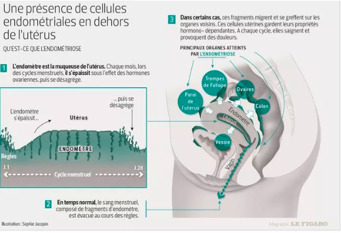
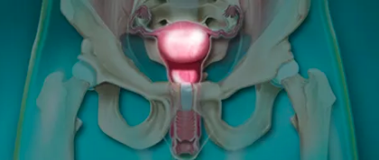
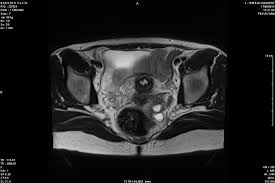

I Qu'est-ce que l'Endométriose ?
L’endométriose est une maladie gynécologique causée par la présence de cellules de l'endomètre en-dehors de l'utérus.
L’endométriose est une maladie chronique. Elle touche 10% des femmes en âge de procréer et 40% des femmes se
plaignant de douleurs dans bas du ventre.
La maladie peut être asymptomatique et ne pas nécessiter de prise en charge mais elle peut aussi causer
des douleurs gynécologiques ponctuelles ou chroniques, et entraîner une infertilité.
Le retard de diagnostic est malheureusement fréquent : il peut s’écouler 8 à 10 ans entre les premiers
symptômes et la confirmation du diagnostic.
II Symptômes de l'endométriose : douleur et infertilité
Les symptômes induits par l’endométriose sont le plus souvent des douleurs et une infertilité. Leur sévérité
n’est pas forcément corrélée à l’étendue des lésions induites par la maladie.
Chez les femmes souffrant d’endométriose, dans 50 à 91% des cas, la douleur est évoquée. Elle peut être due :
- aux lésions d'endométriose elles-mêmes;
- à l'envahissement de nerfs par ces lésions;
- aux réactions inflammatoires de l'organisme;
- aux adhérences fibreuses et cicatricielles se développant parfois entre les organes touchés.
Cette douleur peut se manifester de différentes manières :

- Pendant les règles, on parle alors de dysménorrhée ;
- Des douleurs pendant les rapports sexuels (dyspareunie) ;
- Douleurs pelviennes fréquentes
- Douleur lors de la défécation ;
- Douleur à la miction ;
- Douleurs abdominales (ballonnements) ;
- Douleurs lombaires ( lombalgie, sciatique, cruralgie).
Une infertilité chez 40% des femmes atteintes d’endométriose
Parfois l’endométriose est asymptomatique. La maladie est découverte lors d’un bilan de fertilité
suite à la difficulté de concevoir un enfant. Chez 30 à 40 % des femmes atteintes d’endométriose,
une infertilité est associée. L'endométriose serait ainsi l'une des causes les plus fréquentes de stérilité.
III Un traitement uniquement en cas de symptômes
Un examen clinique et échographique, voire par IRM, permet de détecter une endométriose, même si le
diagnostic définitif doit passer par l’analyse du tissu endométrial prélevé au cours d’une chirurgie.

Une endométriose asymptomatique, non douloureuse et qui ne pose pas de problèmes de fertilité n’est en
général pas détectée et donc pas traitée. Mais lorsqu'une patiente découvre son endométriose
en raison de douleurs, on lui propose le plus souvent en première intention un traitement hormonal destiné à
supprimer les règles (contraceptifs œstroprogestatifs monophasiques en continu, progestatifs, danazol ou
analogues de la GnRH). Ce traitement réduit les douleurs liées à la réponse hormonale des lésions d’endométriose
et peut permettre de stabiliser les lésions, voire de diminuer légèrement leur volume. Toutefois,
il ne permet pas leur élimination totale.
La chirurgie est le seul traitement permettant l'élimination complète des lésions associées à l'endométriose.

Elle est pratiquée en cas de symptômes handicapants et/ou d’infertilité.
Les progrès chirurgicaux permettent
des opérations de plus en plus conservatrices des tissus sains et de moins en moins invasives.
Grâce à la chirurgie, les symptômes douloureux peuvent disparaître pendant de nombreuses années, voire totalement.
La difficulté chirurgicale est cependant amplifiée dans le cas de petites lésions disséminées ou quand l’intervention
induit un rapport risque/bénéfice défavorable, avec par exemple un risque d’incontinence
III Endométriose : où en est la recherche ?
Les chercheurs tentent de mieux comprendre les mécanismes de cette maladie complexe et ses liens avec l’infertilité.
Ils travaillent notamment à l’identification de gènes de susceptibilité, de manière à élucider leur rôle et
à découvrir des marqueurs de risque.
Faciliter le diagnostic
De nombreuses équipes de recherche s’intéressent aussi au diagnostic : comment l’accélérer ? Comment le rendre
moins invasif ? Aujourd’hui, les femmes doivent subir, dans la plupart des cas, une endoscopie : une chirurgie
qui consiste à insérer une caméra dans la cavité abdominale.
Des chercheurs de l’Institut Feinstein de New-York
s’intéressent aux marqueurs de la maladie présents dans le sang menstruel. D’après eux, sa composition n’est
pas la même pour les femmes atteintes : il contient des cellules souches différentes.
A terme, cela pourrait
permettre de faire une simple analyse de sang menstruel pour établir le diagnostic.
Des centres experts de l’endométriose
Mieux comprendre la maladie passe aussi par la formation des équipes médicales. Le Collège national des
gynécologues et obstétriciens (CNGOF) veut créer des centres experts de l’endométriose régionaux en France.
"Les Anglais en sont équipés depuis dix ans, souligne François Golfier, président de la commission
endométriose du CNGOF, dans le Parisien. Il en faudrait une trentaine en France". L’objectif de ces centres
est de former des praticiens, développer la recherche et mettre en place une prise en charge.
Pour François Golfier, cette formation initiale est primordiale pour mieux informer les médecins et leur
permettre de mieux accompagner les patientes. Aujourd’hui, la maladie ne fait toujours pas partie du
programme de l’examen de médecine.
Retour au portfolio